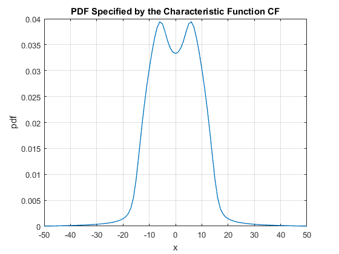
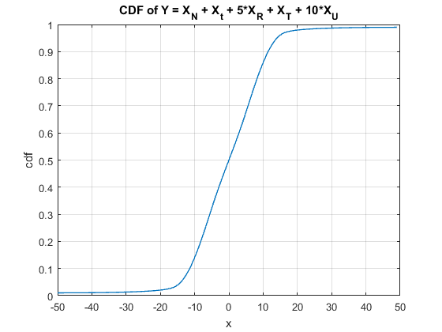
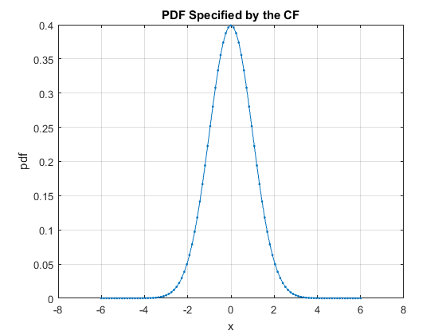
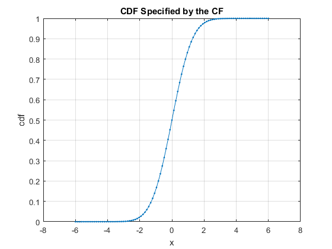

Contents
CF TOOLBOX
(c) 2016 Viktor Witkovsky, witkovsky@gmail.com Version: 15-Nov-2016
CF TOOLBOX (The Characteristic Functions Toolbox) consists of a set of algorithms for evaluating selected characteristic funcions and algorithms for numerical inversion of the (combined and/or compound) characteristic functions, used to evaluate the probability density function (PDF) and the cumulative distribution function (CDF) . The inversion algorithms are based on using simple trapezoidal rule for computing the integrals defined by the Gil-Pelaez formulae, and/or by using the FFT algorithm for computing the Fourier transform integrals.
REFERENCES:
- WITKOVSKY, V.: On the exact computation of the density and of the quantiles of linear combinations of t and F random variables. Journal of Statistical Planning and Inference 94 (2001), 1–13.
- WITKOVSKY, V.: Matlab algorithm TDIST: The distribution of a linear combination of Student’s t random variables. In COMPSTAT 2004 Symposium (2004), J. Antoch, Ed., Physica-Verlag/Springer 2004, Heidelberg, Germany, pp. 1995–2002.
- WITKOVSKY, V.: WIMMER,G., DUBY, T. Logarithmic Lambert W x F random variables for the family of chi-squared distributions and their applications. Statistics & Probability Letters 96 (2015), 223–231.
- WITKOVSKY V. (2016). Numerical inversion of a characteristic function: An alternative tool to form the probability distribution of output quantity in linear measurement models. Acta IMEKO, 5(3), 32-44.
- WITKOVSKY V., WIMMER G., DUBY T. (2016). Computing the aggregate loss distribution based on numerical inversion of the compound empirical characteristic function of frequency and severity. Preprint submitted to Insurance: Mathematics and Economics.
- DUBY T., WIMMER G., WITKOVSKY V.(2016). MATLAB toolbox CRM for computing distributions of collective risk models. Preprint submitted to Journal of Statistical Software.
- WIMMER G., ALTMANN G. (1999). Thesaurus of univariate discrete probability distributions. STAMM Verlag GmbH, Essen, Germany. ISBN 3-87773-025-6.
clear
close all
ALGORITHMS FOR NUMERICAL INVERSION OF THE CHARACTERISTIC FUNCTION
ALGORITHM cf2DistFFT
cf2DistFFT(cf,x,prob,options) Evaluates the CDF/PDF/QF (quantiles) from the characteristic function CF of a (continuous) distribution F by using the Fast Fourier Transform (FFT) algorithm.
The algorithm cf2DistFFT evaluates the (approximate) values CDF(x), PDF(x), and/or the quantiles QF(prob) for given x and prob, by interpolation from the PDF-estimate computed by the numerical inversion of the given characteristic function CF by using the FFT algorithm.
SYNTAX:
- result = cf2DistFFT(cf)
- [result,cdf,pdf,qf] = cf2DistFFT(cf,x,prob,options)
REMARKS:
The outputs of the algorithm cf2DistFFT are approximate values! The precission of the presented results depends on several different factors:
- Application of the FFT algorithm for numerical inversion of the CF.
- Selected number of points used by the FFT algorithm (by default options.N = 2^10).
- The domain [A,B] of the distribution F is used with the FFT algorithm for determining the discretization step dt = 2*pi/(B-A). If the distribution domain [A,B] is unknown or infinite, i.e. [A,B] = [-Inf,Inf], then the estimated/calculated approximation of [A,B] is used. Optimally, [A,B] covers large part of the distribution domain, say more than 99%. However, the default automatic procedure for selection of the domain [A,B] may fail. It is based on the SixSigmaRule: A = MEAN - SixSigmaRule*STD, and B = MEAN + SixSigmaRule*STD. Alternatively, change the options.SixSigmaRule to different value, say 12, or use the options.xMin and options.xMax to set manually the values of A and B.
EXAMPLE: Distribution of a linear combination of independent RVs
Here we consider random variables with the Normal, Student's t, Rectangular, Triangular and Arcsine distributions.
The distribution of the linear combination of the independent RVs, say Y = X_{N} + X_{t} + 5*X_{R} + X_{T} + 10*X_{U}, can be evaluated by numerical inversion of its characteristic function (CF).
cf_N = @(t) exp(-t.^2/2); cf_t = @(t,nu) min(1,besselk(nu/2, abs(t).*sqrt(nu),1) .* ... exp(-abs(t).*sqrt(nu)) .* (sqrt(nu).*abs(t)).^(nu/2) / ... 2^(nu/2-1)/gamma(nu/2)); cf_R = @(t) min(1,sin(t)./t); cf_T = @(t) min(1,(2-2*cos(t))./t.^2); cf_U = @(t) besselj(0,t); % Characteristic function of the linear combination Y c = [1 1 5 1 10]; nu = 1; cf_Y = @(t) cf_N(c(1)*t) .* cf_t(c(2)*t,nu) .* cf_R(c(3)*t) .* ... cf_T(c(4)*t) .* cf_U(c(5)*t); clear options options.N = 2^10; options.xMin = -50; options.xMax = 50; result = cf2DistFFT(cf_Y,[],[],options); title('CDF of Y = X_{N} + X_{t} + 5*X_{R} + X_{T} + 10*X_{U}') disp(result)
x: [1×101 double]
cdf: [1×101 double]
pdf: [1×101 double]
prob: [0.9000 0.9500 0.9750 0.9900 0.9950 0.9990]
qf: [1×6 double]
xFTT: [2048×1 double]
pdfFFT: [2048×1 double]
cdfFFT: [2048×1 double]
SixSigmaRule: 6
N: 1024
dt: 0.0628
T: 64.3084
isPrecisionOK: 1
xMean: 0
xStd: 118.1005
xMin: -50
xMax: 50
cf: [function_handle]
const: 0
isCompound: 0
options: [1×1 struct]
tictoc: 0.1024
  ALGORITHM cf2DistGP
cf2DistGP(cf,x,prob,options) Calculates the CDF/PDF/QF from the characteristic function CF by using the Gil-Pelaez inversion formulae:
cdf(x) = 1/2 + (1/pi) * Integral_0^inf imag(exp(-1i*t*x)*cf(t)/t)*dt, pdf(x) = (1/pi) * Integral_0^inf real(exp(-1i*t*x)*cf(t))*dt.
SYNTAX:
- result = cf2DistGP(cf,x)
- [result,cdf,pdf,qf] = cf2DistGP(cf,x,prob,options)
REMARKS:
The required integrals are evaluated approximately by using the simple trapezoidal rule on the interval(0,T), where T = N * dt is a sufficienly large integration upper limit in the frequency domain.
If the optimum values of N and T are unknown, we suggest, as a simple rule of thumb, to start with the application of the six-sigma-rule for determining the value of dt = (2*pi)/(xMax-xMin), where xMax = xMean + 6*xStd, and xMin = xMean - 6*xStd, see [1].
Please note that THIS (TRAPEZOIDAL) METHOD IS AN APPROXIMATE METHOD: However, the numerical error (truncation error and/or the discretization/integration error) could be and should be properly controled!
CONTROLING THE PRECISION:
Simple criterion for controling numerical precision is as follows: Set N and T = N*dt such that the value of the integrand function Imag(e^(-1i*t*x) * cf(t)/t) is sufficiently small for all t > T, i.e. PrecisionCrit = abs(cf(t)/t) <= tol, for pre-selected small tolerance value, say tol = 10^-8. If this criterion is not valid, the numerical precission of the result is violated, and the method should be improved (e.g. by selecting larger N or considering other more sofisticated algorithm - not considered here). For more details consult the references below.
EXAMPLE: CDF/PDF of standard Normal distribution by inverting its CF
We consider CF of a standard Normal distribution cf(t) = exp(-t.^2/2).
cf = @(t) exp(-t.^2/2); result = cf2DistGP(cf); disp(result)
x: [101×1 double]
cdf: [101×1 double]
pdf: [101×1 double]
prob: []
qf: []
SixSigmaRule: 6
N: 1024
dt: 0.5236
T: 536.1651
PrecisionCrit: 0
myPrecisionCrit: 1.0000e-12
isPrecisionOK: 1
xMean: 0
xStd: 1.0000
xMin: -6.0000
xMax: 6.0000
cf: @(t)exp(-t.^2/2)
const: 0
isCompound: 0
isCircular: 0
details: [1×1 struct]
options: [1×1 struct]
tictoc: 0.0072
 